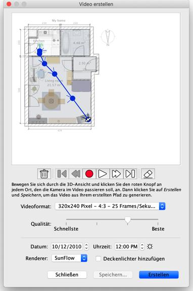

|
|
Videos erstellen | ||
|
Um ein 3D-Video von ihrer Wohnung zu erstellen, w�hlen Sie den Men�eintrag 3D-Ansicht > Video erstellen… oder klicken Sie das Video erstellen-Werkzeug an.
Dadurch wird ein Dialogfenster angezeigt, das demjenigen zur Erstellung von Fotos �hnelt. 
Oben in diesem Bereich wird der Wohnungsplan Ihrer Wohnung angezeigt, auf dem der
virtueller Pfad der Videokamera gezeichnet wird. Die Schaltfl�chen zur Aufnahme,
Wiedergabe und zum L�schen unter dem Wohnungsplan dienen dazu, die Punkte aufzunehmen,
an denen die Kamera vorbeikommen soll, den aufgenommenen Pfad abzuspielen
beziehungsweise einzelne Punkte des Pfads zu entfernen.
Um ein Video zu erstellen, w�hlen Sie die Anfangsposition der Videokamera in der
3D-Ansicht des Sweet Home 3D-Hauptfensters. Klicken Sie dann auf die Schaltfl�che mit
dem roten Punkt im Dialog Video erstellen. Bewegen Sie sich dann in der
3D-Ansicht zum n�chsten Standort der Videokamera und klicken Sie erneut die
Schaltfl�che mit dem roten Punkt an. Wiederholen Sie diese Schritte f�r jede Position,
an der die Kamera im Verlauf des Videos vorbeikommen soll. |
|